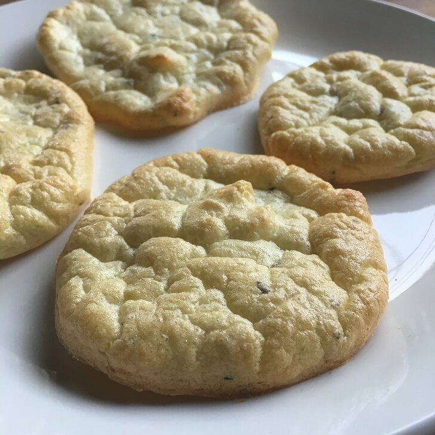

Italian bread

Description
A low carb italian bread perfect for sadwiches
ingrediants
- 2 eggs, separated
- ¼ teaspoon baking powder
- 2 tablespoons cream cheese, softened
- 2 teaspoons Italian herb blend
- 1 pinch salt
Steps
- Preheat the oven to 300 degrees F (150 degrees C). Line a baking sheet with parchment paper.
- Beat egg whites in a glass, metal, or ceramic bowl until foamy. Add baking powder and continue to beat until stiff peaks form.
- Whisk egg yolks, cream cheese, Italian herbs, and salt in a separate bowl until well blended.
- Gently fold cream cheese mixture into the beaten egg whites with a spatula until just mixed and yellow. Spoon mixture into about 6 rounds of about 3 inches diameter on the baking sheet. Smooth the tops with the back of a spoon.
- Bake in the preheated oven until golden brown, about 25 minutes. Remove from the oven and serve warm, or allow to cool.